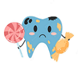
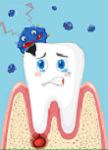
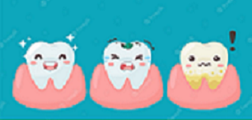

Five Most Common Dental Conditions
- Tooth Decay (Cavities): Tooth decay is caused by the buildup of plaque, a sticky film of bacteria that produces acid and damages the tooth enamel, leading to cavities.
- Gum Disease (Gingivitis and Periodontitis): Gum disease is characterized by inflammation and infection of the gums. Gingivitis is the early stage of gum disease, while periodontitis is a more advanced form that can lead to tooth loss if left untreated.
- Tooth Sensitivity: Tooth sensitivity occurs when the tooth's protective enamel wears down, exposing the sensitive dentin underneath. It can cause discomfort or pain when exposed to hot, cold, sweet, or acidic foods and beverages.
- Tooth Erosion: Tooth erosion is the loss of tooth structure caused by acid attacks. It can be the result of consuming acidic foods and beverages, certain medical conditions, or acid reflux.
- Bad Breath (Halitosis): Bad breath can be caused by poor oral hygiene, gum disease, certain foods, smoking, dry mouth, or underlying medical conditions.
Remember to consult with your dentist or dental hygienist for personalized diagnoses regarding specific dental and oral needs.
  